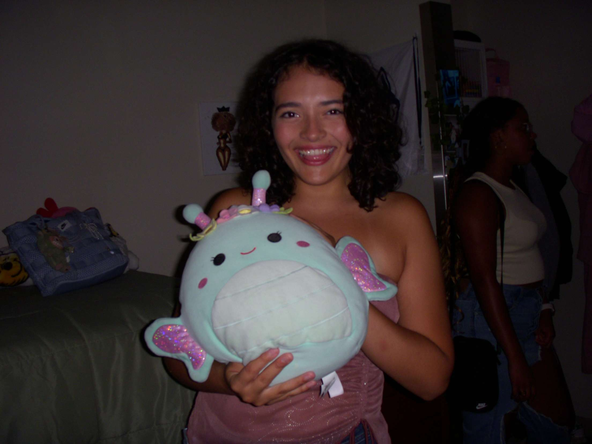

Hey my name is Sarah! I'm a 19 year old student at the University of Connecticut, with a major in Digital Media and Design (Web Design). Lets start at the beginning, shall we? I was born in Tampa, Florida and lived there for most of my childhood until I turned 10. My mom decided to move us to Connecticut, a HUGE difference compared to the sunshine state. It was here in Connecticut where I found my love for Video games, art, and all things digital media. I took python classes in middle school, and built my own gaming computer in high school. When I finally graduated, I decided to pursue a career in web development. Hence, I'm here today!

My favorite things to do are write reviews, draw, design, and of course, code! I am excited to continue in my next step towards web design and development. I love to learn and especially, CREATE!